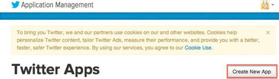
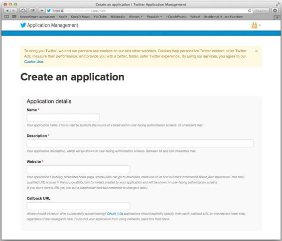
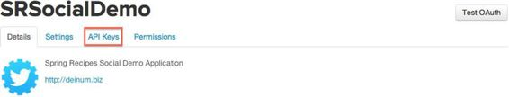
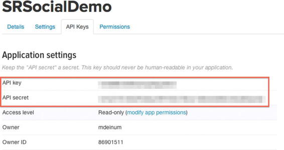
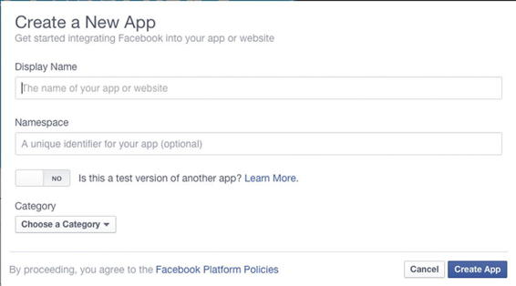
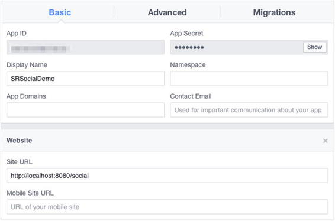
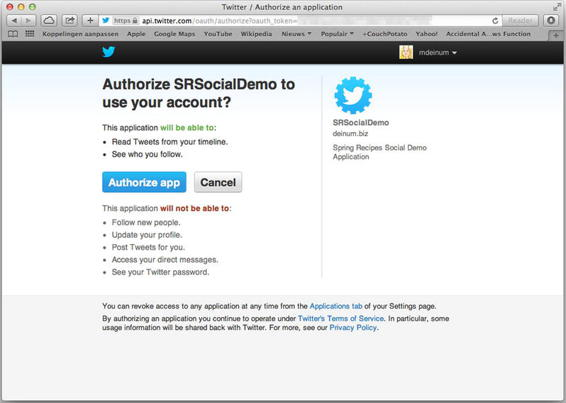

Spring Social
Social networking is everywhere and most Internet users have one or more social networking accounts. People tweet to share what they are doing or how they feel about a subject; they share pictures on Facebook and Instagram, and write blogs using Tumblr. More and more social networks are appearing every day.
As the owner of a website it can be beneficial to add integration with those social networks, allowing users to easily post links or to filter and show how people think.
Spring Social tries to have a unified API to connect to those different networks and an extension model. Spring Social itself provides integration for Facebook, Twitter, and LinkedIn; however, there are a lot of community projects providing support for different social networks (like Tumblr, Weibo, and Instagram to name a few).
Spring Social can be split into three parts. First there is the Connect Framework, which handles the authentication and connection flow with the underlying social network. Next, is the ConnectController is the controller doing the OAuth exchange between the service provider, the consumer (the application), and the user of the application. Finally there is the SocialAuthenticationFilter which integrates Spring Social with Spring Security (see Chapter 8) to allow users to sign in with their social network account.
6-1. Setting Up Spring Social
Problem
You want to use Spring Social in your application.
Solution
Add Spring Social to your dependencies and enable Spring Social in your configuration.
How It Works
Spring Social consists of several modules apart from all the different modules for each service provider (like Twitter, Facebook, GitHub, etc.). To be able to use Spring Social you will need to add those to your application’s dependencies. Table 6-1 shows the available modules.
Table 6-1. Overview of Spring Social Modules
|
Module |
Description |
|---|---|
|
spring-social-core |
Core module of Spring Social, contains the main and shared infrastructure classes. |
|
spring-social-config |
Spring Social configuration module, makes it easier to configure (parts) of Spring Social |
|
spring-social-web |
Web integration for Spring Social contains filters and controllers for easy use. |
|
spring-social-security |
Integration with Spring Security (see chapter 8). |
To dependencies are in the group org.springframework.social, this chapter will cover every module (core, config, web, and security) in different recipes. This section will cover the basic setup of Spring Social. At the moment of writing 1.1.0.RELEASE was the latest version of Spring Social available. Add the following dependencies (when using maven).
<dependency>
<groupId>org.springframework.social</groupId>
<artifactId>spring-social-core</artifiactId>
<version>1.1.0.RELEASE</version>
</dependency>
<dependency>
<groupId>org.springframework.social</groupId>
<artifactId>spring-social-config</artificatId>
<version>1.1.0.RELEASE</version>
</dependency>
With the dependencies added Spring Social can now be setup.
package com.apress.springrecipes.social.config;
import com.apress.springrecipes.social.StaticUserIdSource;
import org.springframework.context.annotation.*;
import org.springframework.core.env.Environment;
import org.springframework.social.config.annotation.EnableSocial;
import org.springframework.social.config.annotation.SocialConfigurerAdapter;
@Configuration
@EnableSocial
@PropertySource("classpath:/application.properties")
public class SocialConfig extends SocialConfigurerAdapter {
@Override
public StaticUserIdSource getUserIdSource() {
return new StaticUserIdSource();
}
}
To enable Spring Social simply add the @EnableSocial annotation to a @Configuration annotated class. This annotation will trigger loading of the configuration of Spring Social. It will detect any instance of SocialConfigurer beans, these beans are used for further configuration of Spring Social. Those are used to add the configuration for 1 or more service providers.
The SocialConfig extends SocialConfigurerAdapter which is an implementation of a SocialConfigurer, as you can see there is an overridden method getUserIdSource which returns a StaticUserIdSource. Spring Social requires an instance of a UserIdSource to determine the current user. This user is used to lookup any connections with service providers. These connections are stored in a, per user, ConnectionRepository. The ConnectionRepository to use is determined by the UsersConnectionRepository, which uses the current user for that. The default configured UsersConnectionRepository is the InMemoryUsersConnectionRepository.
Finally you are going to load a properties file from the classpath, this properties file contains the api keys for your application to use for service providers. Instead of putting them in a properties file you could also hardcode them into your code.
For the time being you are going to use the StaticUserIdSource to determine the current user.
package com.apress.springrecipes.social;
import org.springframework.social.UserIdSource;
public class StaticUserIdSource implements UserIdSource {
private static final String DEFAULT_USERID = "anonymous";
private String userId = DEFAULT_USERID;
@Override
public String getUserId() {
return this.userId;
}
public void setUserId(String userId) {
this.userId = userId;
}
}
The StaticUserIdSource implements UserIdSource and returns a preset userId, although this works for now but in a real application you want to be able to store the connection information on a per user basis.
Problem
You want your application to have access to Twitter.
Solution
Register your application with Twitter and configure Spring Social to make use of the application credentials to get access to Twitter.
How It Works
Before you can have your application use Twitter you need to register your application with Twitter. After this registration you will have credentials (API key and API secret) to identify your application.
Register an Application on Twitter
To register an application with Twitter go to https://dev.twitter.com and look in the right-hand top corner for your avatar, now from the dropdown menu select My applications (see Figure 6-1).
Figure 6-1. Selecting my applications on twitter
After selection My Applications the Application Management page will appear. On this page is a button which allows you to create new apps (see Figure 6-2).

Figure 6-2. Application Management Page
On this page, press the button to open the screen (see Figure 6-3) to register your application.

Figure 6-3. Register a new application
Now in this screen you must enter a name and description of your application and it also requires a URL of the website on which this application is going to be used. When using Spring Social it is also important that you fill-out the callback url field as we need callbacks, the actual value doesn’t really matter (unless you use a very old version of OAuth).
After accepting the terms and conditions and pressing the final create button you will be taken to your application settings page and you successfully created your application.
To be able to connect Spring Social to Twitter you need to know your API key and API secret, those can be found on the API Keys tab of your application settings (see Figures 6-4 and 6-5).

Figure 6-4. Application Settings page

Figure 6-5. API key and API secret needed to connect Spring Social
Configure Spring Social to Connect with Twitter
Now that you have an API key and API secret you can configure Spring Social to connect to Twitter. First create a properties file (for instance application.properties) to hold your API key and API secret so that we can easily retrieve it when we need it.
twitter.appId=<your-twitter-API-key-here>
twitter.appSecret=<your-twitter-API-secret-here>
To connect to Twitter you need to add a TwitterConnectionFactory which will use the application id and secret when requested to connect to Twitter.
package com.apress.springrecipes.social.config;
import org.springframework.core.env.Environment;
import org.springframework.social.config.annotation.ConnectionFactoryConfigurer;
import org.springframework.social.connect.Connection;
import org.springframework.social.connect.ConnectionRepository;
import org.springframework.social.twitter.api.Twitter;
import org.springframework.social.twitter.connect.TwitterConnectionFactory;
@Configuration
@EnableSocial
@PropertySource("classpath:/application.properties")
public class SocialConfig extends SocialConfigurerAdapter {
...
@Configuration
public static class TwitterConfigurer extends SocialConfigurerAdapter {
@Override
public void addConnectionFactories(
ConnectionFactoryConfigurer connectionFactoryConfigurer,
Environment env) {
connectionFactoryConfigurer.addConnectionFactory(
new TwitterConnectionFactory(
env.getRequiredProperty("twitter.appId"),
env.getRequiredProperty("twitter.appSecret")));
}
@Bean
@Scope(value = "request", proxyMode = ScopedProxyMode.INTERFACES)
public Twitter twitterTemplate(ConnectionRepository connectionRepository) {
Connection<Twitter> connection = connectionRepository.findPrimaryConnection(Twitter.class);
return connection != null ? connection.getApi() : null;
}
}
}
The SocialConfigurer interface has the callback method addConnectionFactories which allows you to add ConnectionFactory instances to use to Spring Social. For Twitter there is the TwitterConnectionFactory which takes two arguments, the first is the API key, the second is the API secret. Both constructor arguments come from the properties file that is read. Of course you could also hardcode the values into the configuration.
The connection to Twitter has been made, although you could use the raw underlying connection it isn’t really recommended to do so. Instead use the TwitterTemplate which makes it easier to work with the Twitter API.
The configuration above adds a TwitterTemplate to the application context. Notice the @Scope annotation. It is important that this bean is request scoped. For each request the actual connection to Twitter might differ as potentially every request is for a different user. Hence the request scoped bean. The ConnectionRepository that is injected into the method is determined based on the id of the current user, which is retrieved using the UserIdSource you configured earlier.
 Note Although the sample uses a separate configuration class to configure Twitter as a service provider you can also add it to the main SocialConfig class. However it can be desirable to separate the global Spring Social configuration from the specific service provider setup.
Note Although the sample uses a separate configuration class to configure Twitter as a service provider you can also add it to the main SocialConfig class. However it can be desirable to separate the global Spring Social configuration from the specific service provider setup.
Problem
You want your application to have access to Facebook.
Solution
Register your application with Facebook and configure Spring Social to make use of the application credentials to get access to Facebook.
How It Works
Before you can have your application use Facebook you first need to register your application with Facebook. After this registration you will have credentials (API key and API secret) to identify your application. To be able to register an application on Facebook you have to have a Facebook account and have to be registered as a developer. (This recipe assumes you already have been registered as a developer with Facebook. If not go to http://developers.facebook.com and click the Register Now button and fill out the wizard).
Register an Application on Facebook
Start by going to http://developers.facebook.com and click the Apps menu on top of the page and select Create a New App (see Figure 6-6).
Figure 6-6. First steps in registering a new app
This will open a screen (see Figure 6-7) which allows you to fill in some details about your application.

Figure 6-7. Create a new App window
The name of your application can be anything as long as it doesn’t contain the word “face” or “book”. The namespace is used by the Facebook Graph API it is limit to only contain lowercase characters and of course has to be unique over all Facebook applications. Finally you need to select the category in which your application belongs. When you decided on all these things press the Create App button, which will take you to your application page (see Figure 6-8).

Figure 6-8. Facebook Settings page
On this page navigate to the Settings tab.
On the settings page enter the URL of the site your app is going to be part of. In this exercise that is http://localhost:8080/social. If this URL isn’t present, authorization will not be granted and the connection will be never made.
Configure Spring Social to Connect with Facebook
This Facebook settings page also contains the application id and secret needed by the application to connect to Facebook. Put them in the application.properties file.
facebook.appId=<your app-id here>
facebook.appSecret=<your app-secret here>
Assuming Spring Social is already setup (see Recipe 6-1) it is a matter of adding a FacebookConnectionFactory and FacebookTemplate for easy access.
package com.apress.springrecipes.social.config;
import org.springframework.social.facebook.api.Facebook;
import org.springframework.social.facebook.connect.FacebookConnectionFactory;
@Configuration
@EnableSocial
@PropertySource("classpath:/application.properties")
public class SocialConfig extends SocialConfigurerAdapter {
...
@Configuration
public static class FacebookConfiguration extends SocialConfigurerAdapter {
@Override
public void addConnectionFactories(
ConnectionFactoryConfigurer connectionFactoryConfigurer,
Environment env) {
connectionFactoryConfigurer.addConnectionFactory(
new FacebookConnectionFactory(
env.getRequiredProperty("facebook.appId"),
env.getRequiredProperty("facebook.appSecret")));
}
@Bean
@Scope(value = "request", proxyMode = ScopedProxyMode.INTERFACES)
public Facebook facebookTemplate(ConnectionRepository connectionRepository) {
Connection<Facebook> connection = connectionRepository.findPrimaryConnection(Facebook.class);
return connection != null ? connection.getApi() : null;
}
}
}
The FacebookConnectionFactory needs the application id and secret. Both properties are added to the application.properties file and are available through the Environment object.
The bean configuration above adds a bean named facebookTemplate to the application context. Notice the @Scope annotation. It is important that this bean is request scoped. For each request the actual connection to Facebook might differ as potentially every request is for a different user. Hence the request scoped bean. The ConnectionRepository that is injected into the method is determined based on the id of the current user, which is retrieved using the UserIdSource you configured earlier (see Recipe 6-1).
Note Although the sample uses a separate configuration class to configure Facebook as a service provider you can also add it to the main SocialConfig class. However it can be desirable to separate the global Spring Social configuration from the specific service provider setup.
6-4. Showing Service Provider Connection Status
Problem
You want to display the status of the connections of the used service providers.
Solution
Configure the ConnectController and use it to show the status to the user.
How It Works
Spring Social comes with a ConnectController which takes care of connecting and disconnecting to a service provider but you can also show the status (connected or not) of the current user for the used service providers. The ConnectController uses several REST URLs to either show, add, or remove the connection for the given user (see Table 6-2).
Table 6-2. ConnectController URL mapping
|
URL |
Method |
Description |
|---|---|---|
|
/connect |
GET |
Display the connection status of all available service provides. Will return connect/status as the name of the view to render. |
|
/connect/{provider} |
GET |
Display the connection status of the given provider. When connected will return connect/{provider}Connected else will return connect/{provider}Connect as the view to render. |
|
/connect/{provider} |
POST |
Starts the connection flow with the given provider. |
|
/connect/{provider} |
DELETE |
Deletes all connections for the current user with the given provider. |
To be able to use the controller you first need to configure Spring MVC (see Chapter 4). For this add the following configuration.
package com.apress.springrecipes.social.config;
import org.springframework.context.annotation.Bean;
import org.springframework.context.annotation.ComponentScan;
import org.springframework.social.connect.ConnectionFactoryLocator;
import org.springframework.social.connect.ConnectionRepository;
import org.springframework.social.connect.web.ConnectController;
import org.springframework.web.servlet.ViewResolver;
import org.springframework.web.servlet.config.annotation.EnableWebMvc;
import org.springframework.web.servlet.config.annotation.ViewControllerRegistry;
import org.springframework.web.servlet.config.annotation.WebMvcConfigurerAdapter;
import org.springframework.web.servlet.view.InternalResourceViewResolver;
@EnableWebMvc
@ComponentScan({"com.apress.springrecipes.social.web"})
public class WebConfig extends WebMvcConfigurerAdapter {
@Bean
public ViewResolver internalResourceViewResolver() {
InternalResourceViewResolver viewResolver = new InternalResourceViewResolver();
viewResolver.setPrefix("/WEB-INF/views/");
viewResolver.setSuffix(".jsp");
return viewResolver;
}
@Override
public void addViewControllers(ViewControllerRegistry registry) {
registry.addViewController("/").setViewName("index");
}
}
You need to enable Spring MVC using @EnableWebMvc, and add a ViewResolver so the jsp pages can be picked up. Finally you want to show the index.jsp when the application starts up.
Next add the ConnectController to the WebConfig, this controller needs ConnectionFactoryLocator and ConnectionRepository as constructor arguments. To access those simply add them as method arguments.
@Bean
public ConnectController connectController(
ConnectionFactoryLocator connectionFactoryLocator,
ConnectionRepository connectionRepository) {
return new ConnectController(connectionFactoryLocator, connectionRepository);
}
The ConnectController will listen to the URLs as listed in Table 6-2. Now add two views in the /WEB-INF/views directory. The first is the main index the second is the status overview page.
First create the index.jsp
<%@ taglib prefix="spring" uri="http://www.springframework.org/tags" %>
<html>
<head>
<title>Hello Spring Social</title>
</head>
<body>
<h3>Connections</h3>
Click <a href="<spring:url value='/connect'/>">here</a> to see your Social Network Connections.
</body>
</html>
Next create the status.jsp in the /WEB-INF/views/connect directory.
<%@ taglib prefix="spring" uri="http://www.springframework.org/tags" %>
<%@ taglib prefix="c" uri="http://java.sun.com/jsp/jstl/core" %>
<html>
<head>
<title>Spring Social - Connections</title>
</head>
<body>
<h3>Spring Social - Connections</h3>
<c:forEach items="${providerIds}" var="provider">
<h4>${provider}</h4>
<c:if test="${not empty connectionMap[provider]}">
You are connected to ${provider} as ${connectionMap[provider][0].displayName}
</c:if>
<c:if test="${empty connectionMap[provider]}">
<div>
You are not yet connected to ${provider}. Click <a href="<spring:url value="/connect/${provider}"/>">here</a> to connect to ${provider}.
</div>
</c:if></c:forEach>
</body>
</html>
The status page will iterate over all available providers and will determine if there is an existing connection for the current user for that service provider (twitter, facebook, etc.). The ConnectController will make the list of providers available under the providerIds attribute and the connectionMap holds the connections of the current user.
Now to bootstrap the application you will need to create a WebApplicationInitializer that will register a ContextLoaderListener and DispatcherServlet to handle the requests.
package com.apress.springrecipes.social;
import com.apress.springrecipes.social.config.SocialConfig;
import com.apress.springrecipes.social.config.WebConfig;
import org.springframework.web.filter.DelegatingFilterProxy;
import org.springframework.web.servlet.support.AbstractAnnotationConfigDispatcherServletInitializer;
import javax.servlet.Filter;
public class SocialWebApplicationInitializer extends AbstractAnnotationConfigDispatcherServletInitializer {
@Override
protected Class<?>[] getRootConfigClasses() {
return new Class<?>[]{SocialConfig.class};
}
@Override
protected Class<?>[] getServletConfigClasses() {
return new Class<?>[] {WebConfig.class, };
}
@Override
protected String[] getServletMappings() {
return new String[] {"/"};
}
}
This will bootstrap the application. The SocialConfig will be loaded by the ContextLoaderListener and the WebConfig will be loaded by the DispatcherServlet. To be able to handle requests there needs to be a servlet mapping, for this the mapping will be /.
Now that everything is configured the application can be deployed and accessed by the url http://localhost:8080/social. This will show the index page. Clicking the link will show the connection status page, which initially will show that the current user isn’t connected.
Connecting to a Service Provider
Now when clicking on a link to connect to a service provider the user will be sent to the /connect/{provider} url. When there isn’t a connection the connect/{provider}Connect page will be rendered or the connect/{provider}Connected page would be shown.
To be able to use the ConnectController to connect to Twitter you need to add the twitterConnect.jsp and twitterConnected.jsp. For Facebook it would be facebookConnect.jsp and facebookConnected.jsp. The same pattern applies to all other service provider connectors for Spring Social (like GitHub, FourSquare, LinkedIn, ...).
First add the twitterConnect.jsp to the /WEB-INF/views/connect directory.
<%@ taglib prefix="spring" uri="http://www.springframework.org/tags" %>
<html>
<head>
<title>Spring Social - Connect to Twitter</title>
</head>
<body>
<h3>Connect to Twitter</h3>
<form action="<spring:url value='/connect/twitter'/>" method="POST">
<div class="formInfo">
<p>You aren't connected to Twitter yet. Click the button to connect this application with your Twitter account.</p>
</div>
<p><button type="submit">Connect to Twitter</button></p>
</form>
</body>
</html>
Notice the form tag which POSTs the form back to the same URL. When pressing the submit button you will be redirected to Twitter which will ask for your permission to allow this application to access your Twitter profile. (Replace this with facebook to connect to Facebook.).
Next add the twitterConnected.jsp to the /WEB-INF/views/connect directory. This is the page that will be displayed when you are already connected to Twitter but also when you return from Twitter after authorizing the application.
<%@ taglib prefix="spring" uri="http://www.springframework.org/tags" %>
<html>
<head>
<title>Spring Social - Connected to Twitter</title>
</head>
<body>
<h3>Connected to Twitter</h3>
<p>
You are now connected to your Twitter account.
Click <a href="<spring:url value='/connect'/>">here</a> to see your Connection Status.
</p>
</body>
</html>
When these pages are added reboot the application and navigate to the status page. Now when clicking the Connect to Twitter link you will send to the twitterConnect.jsp. After clicking the Connect to Twitter button you will be shown the Twitter authorize application page (see Figure 6-9).

Figure 6-9. Twitter Authorize Page
After authorizing the application you will be returned to the twitterConnect.jsp telling you that you have successfully connected to Twitter. When returning to the status page you will see that you are connected to Twitter with your nickname.
For Facebook or any other service provider follow the same steps of adding the {provider}Connect and {provider}Connected page and Spring Social will be able to connect to that provider, given that you also added the correct service provider connector and configuration.
Problem
You want to use the Twitter API.
Solution
Use the Twitter object to access the Twitter API.
How It Works
Each service provider has its own API using Twitter. There is an object implementing the Twitter interface which represents the Twitter API in Java; for Facebook an object implementing the Facebook interface is available. In Recipe 6-2 you already set up the connection to Twitter and the TwitterTemplate.
The TwitterTemplate exposes various parts of the Twitter API (see Table 6-3).
Table 6-3. Exposed operations of the Twitter API
|
Operations |
Description |
|---|---|
|
blockOperations() |
Block and unblock users |
|
directMessageOperations() |
Reading and sending direct messages |
|
friendOperations() |
Retrieving a user’s list of friends and followers and following/unfollowing users |
|
geoOperations() |
Working with locations |
|
listOperations() |
Maintaining, subscribing to, and unsubscribing from user lists |
|
searchOperations() |
Searching tweets and viewing search trends |
|
streamingOperations() |
Receive tweets as they are created via Twitter’s Streaming API |
|
timelineOperations() |
Reading timelines and posting tweets |
|
userOperations() |
Retrieving user profile data |
|
restOperations() |
The underlying RestTemplate if a part of the API hasn’t been exposed through the other APIs |
It might be that for certain operations your application requires more access than read-only. If you want to send tweets you need read-write access and to be able to access direct messages you need Read, Write, and access to direct messages.
To post a status update you would use the timelineOperations() and then the updateStatus() method. Depending on your needs it either takes a simple String, the status, or a value object TweetData holding the status and other information like location, if it is a reply to another tweet and optionally any resources like images.
A simple controller could look like the following.
package com.apress.springrecipes.social.web;
import org.springframework.social.twitter.api.Twitter;
import org.springframework.stereotype.Controller;
import org.springframework.web.bind.annotation.RequestMapping;
import org.springframework.web.bind.annotation.RequestMethod;
import org.springframework.web.bind.annotation.RequestParam;
@Controller
@RequestMapping("/twitter")
public class TwitterController {
private final Twitter twitter;
public TwitterController(Twitter twitter) {
this.twitter = twitter;
}
@RequestMapping(method = RequestMethod.GET)
public String index() {
return "twitter";
}
@RequestMapping(method = RequestMethod.POST)
public String tweet(@RequestParam("status") String status) {
twitter.timelineOperations().updateStatus(status);
return "redirect:/twitter";
}
}
The controller needs the Twitter API through the TwitterTemplate. The TwitterTemplate implements the Twitter interface. As you might recall from Recipe 6-2 the API is request scoped. You get a scoped proxy hence the usage of the Twitter interface. The tweet method receives a parameter and passes that on to Twitter.
6-6. Using a Persistent UsersConnectionRepository
Problem
You want to persist the users’ connection data to survive server restarts.
Solution
Use the JdbcUsersConnectionRepository instead of the default InMemoryUsersConnectionRepository.
How It Works
By default Spring Social automatically configures an InMemoryUsersConnectionRepository for storing the connection information for a user. However this doesn’t work in a cluster nor does it survive server restarts. To solve this problem it is possible to use a database to store the connection information. This is enabled by the JdbcUsersConnectionRepository.
The JdbcUsersConnectionRepository requires a database containing a table named UserConnection containing a certain number of columns. Luckily Spring Social contains a DDL script, JdbcUsersConnectionRepository.sql, which you can use to create the table.
First add a DataSource to point to the database of your choice. In this case Derby is used but any database would do.
@Bean
public DataSource dataSource() {
BasicDataSource dataSource = new BasicDataSource();
dataSource.setUrl(env.getRequiredProperty("dataSource.url"));
dataSource.setDriverClassName(env.getRequiredProperty("dataSource.driverClassName"));
dataSource.setUsername(env.getProperty("dataSource.username"));
dataSource.setPassword(env.getProperty("dataSource.password"));
return dataSource;
}
Notice the dataSource.* properties, which are used to configure the URL, JDBC Driver, and username/password. Add the properties to the application.properties file.
dataSource.password=app
dataSource.username=app
dataSource.driverClassName=org.apache.derby.jdbc.ClientDriver
dataSource.url=jdbc:derby://localhost:1527/social;create=true
Now before starting the application you need to start Derby to accept connections. Assuming that you have Derby already available you can start it by running the startNetworkServer command which can be found in the bin directory of the Derby installation.
If you want automatic creation of the desired database table you will need to add a DataSourceInitializer and have it execute the JdbcUsersConnectionRepository.sql file.
@Bean
public DataSourceInitializer databasePopulator() {
ResourceDatabasePopulator populator = new ResourceDatabasePopulator();
populator.addScript(
new ClassPathResource("org/springframework/social/connect/jdbc/JdbcUsersConnectionRepository.sql"));
populator.setContinueOnError(true); // Continue in case the create script already ran
DataSourceInitializer initializer = new DataSourceInitializer();
initializer.setDatabasePopulator(populator);
initializer.setDataSource(dataSource());
return initializer;
}
This DataSourceInitializer is executed at application startup and will execute all the scripts handed to it. By default it will stop application startup as soon as an error is encountered. To stop this set the continueOnError property to true.
Now that the DataSource is setup and configured the final step is to add the JdbcUsersConnectionRepository to the SocialConfig class.
package com.apress.springrecipes.social.config;
import org.springframework.social.connect.jdbc.JdbcUsersConnectionRepository;
...
@Configuration
@EnableSocial
@PropertySource("classpath:/application.properties")
public class SocialConfig extends SocialConfigurerAdapter {
@Override
public UsersConnectionRepository getUsersConnectionRepository(
ConnectionFactoryLocator connectionFactoryLocator) {
return new JdbcUsersConnectionRepository(
dataSource(), connectionFactoryLocator, Encryptors.noOpText());
}
@Bean
public DataSource dataSource() { ... }
...
}
The JdbcUsersConnectionRepository takes three constructor arguments. The first is the DataSource, the second is the passed in ConnectionFactoryLocator, and the last argument is a TextEncryptor. The TextEncryptor is a class from the Spring Security crypto module and is used to encrypt the accessToken, secret, and, when available, the refresh token. The encryption is needed as when the data is stored as plain text and the data would be compromised. The tokens could be used to gain access to your profile information.
For testing however it can be handy to use the noOpText encryptor which, as the name implies, does no encryption. For real production you want to use a TextEncryptor which uses a password and salt to encrypt the values.
When the JdbcUsersConnectionRepository is configured and the database has been started you can restart the application. At first glance nothing has changed; however, as soon as you grant access to, for instance, Twitter, this access will survive application restarts. You can also query the database and see that the information is stored in the USERCONNECTION table.
6-7. Integrating Spring Social and Spring Security
Problem
You want to allow users of your website to connect their social network accounts.
Solution
Use the spring-social-security project to integrate both frameworks.
How It Works
Before you can use the Spring Security integration for Spring Social you will need to add the spring-social-security module to your dependencies.
<dependency>
<groupId>org.springframework.social</groupId>
<artifactId>spring-social-security</artifactId>
<version>1.1.0.RELEASE</version>
</dependency>
This dependency will pull in all other necessary dependencies for Spring Security.
Next let’s setup Spring Security. It goes beyond this recipe to discuss Spring Security in detail. For that check Chapter 7. The setup for this recipe is as follows.
Configuration
@EnableWebMvcSecurity
public class SecurityConfig extends WebSecurityConfigurerAdapter {
@Override
protected void configure(HttpSecurity http) throws Exception {
http.authorizeRequests()
.anyRequest().authenticated()
.and()
.formLogin()
.loginPage("/signin")
.failureUrl("/signin?param.error=bad_credentials")
.loginProcessingUrl("/signin/authenticate").permitAll()
.defaultSuccessUrl("/connect")
.and()
.logout().logoutUrl("/signout").permitAll();
}
@Bean
public UserDetailsManager userDetailsManager(DataSource dataSource) {
JdbcUserDetailsManager userDetailsManager = new JdbcUserDetailsManager();
userDetailsManager.setDataSource(dataSource);
userDetailsManager.setEnableAuthorities(true);
return userDetailsManager;
}
@Override
protected void configure(AuthenticationManagerBuilder auth) throws Exception {
auth.userDetailsService(userDetailsManager(null));
}
}
The @EnableWebMvcSecurity annotation will enable security for Spring MVC applications. It registers beans needed for Spring Security to operate. To do further configuration, like setting up security rules, one or more WebSecurityConfigurers can be added. To make it easier there is a WebSecurityConfigurerAdapter which one can extend.
The configure(HttpSecurity http) method takes care of setting up security. This particular configuration wants a user to be authenticated for every call that is made. If a user isn’t already authenticated (i.e., has logged in to the application) he will be prompted with a login form. You will also notice that the loginPage, loginProcessingUrl, and logoutUrl are modified. This is done so that they match the default URLs from Spring Social.
Note If you want to keep the Spring Security defaults configure the SocialAuthenticationFilter explicitly and set the signupUrl and defaultFailureUrl properties.
With the configure(AuthenticationManagerBuilder auth) you add a AuthenticationManager which is used to determine if a user exists and if the correct credentials were entered. The UserDetailsService used is a JdbcUserDetailsManager which, next to being a UserDetailsService, can also add and remove users from the repository. This will be needed when you add Social signin to the application.
The JdbcUserDetailsManager uses a DataSource to read and write the data and the enableAuthorities properties is set to true so that any roles the user gets from the application are added to the database as well. To bootstrap the database add the create_users.sql script to the database populator configured in the previous recipe.
@Bean
public DataSourceInitializer databasePopulator() {
ResourceDatabasePopulator populator = new ResourceDatabasePopulator();
populator.addScript(
new ClassPathResource("org/springframework/social/connect/jdbc/JdbcUsersConnectionRepository.sql"));
populator.addScript(new ClassPathResource("sql/create_users.sql"));
populator.setContinueOnError(true); // Continue in case the create scripts already ran
DataSourceInitializer initializer = new DataSourceInitializer();
initializer.setDatabasePopulator(populator);
initializer.setDataSource(dataSource());
return initializer;
}
Next, to be able to render the custom login or signin page it needs to be added as a view controller to the WebConfig. This tells that a request to /signin should render the signin.jsp page.
package com.apress.springrecipes.social.config;
...
@EnableWebMvc
@ComponentScan({"com.apress.springrecipes.social.web"})
public class WebConfig extends WebMvcConfigurerAdapter {
...
@Override
public void addViewControllers(ViewControllerRegistry registry) {
registry.addViewController("/").setViewName("index");
registry.addViewController("/signin").setViewName("signin");
}
}
The signin.jsp is a simple JSP page rendering a username and password input field and a submit button.
<%@ taglib prefix="c" uri="http://java.sun.com/jsp/jstl/core" %>
<!DOCTYPE html>
<html>
<body>
<c:url var="formLogin" value="/signin/authenticate" />
<c:if test="${param.error eq 'bad_credentials'}">
<div class="error">
The login information was incorrect please try again.
</div>
</c:if>
<form method="post" action="${formLogin}">
<input type="hidden" name="_csrf" value="${_csrf.token}" />
<table>
<tr>
<td><label for="username">Username</label></td>
<td><input type="text" name="username"/></td>
</tr>
<tr>
<td><label for="password">Password</label></td>
<td><input type="password" name="password"/></td>
</tr>
<tr><td colspan="2"><button>Login</button></td> </tr>
</table>
</form>
</body>
</html>
Notice the hidden input which contains a CSFR token (Cross Site Forgery Request token). This is to prevent malicious websites or javascript code to post to our URL. When using Spring Security with Java Config this is enabled by default. It can be disabled with http.csfr().disable() in the SecurityConfig class.
There are two final configuration pieces left. First this configuration needs to be loaded and second a filter needs to be registered to apply the security to our request. For this modify the SocialWebApplicationInitializer class.
package com.apress.springrecipes.social;
import com.apress.springrecipes.social.config.SecurityConfig;
import com.apress.springrecipes.social.config.SocialConfig;
import com.apress.springrecipes.social.config.WebConfig;
import org.springframework.web.filter.DelegatingFilterProxy;
import org.springframework.web.servlet.support.AbstractAnnotationConfigDispatcherServletInitializer;
import javax.servlet.Filter;
public class SocialWebApplicationInitializer extends AbstractAnnotationConfigDispatcherServletInitializer {
@Override
protected Class<?>[] getRootConfigClasses() {
return new Class<?>[]{SecurityConfig.class, SocialConfig.class};
}
@Override
protected Filter[] getServletFilters() {
DelegatingFilterProxy springSecurityFilterChain = new DelegatingFilterProxy();
springSecurityFilterChain.setTargetBeanName("springSecurityFilterChain");
return new Filter[]{springSecurityFilterChain};
}
...
}
First notice that the SecurityConfig class is added to the getRootConfigClasses method, this will take care of the configuration class being loaded. Next the getServletFilters method is added. This method is used to register filters to requests that are going to be handled by the DispatcherServlet. Spring Security, by default, registers a Filter in the application context named springSecurityFilterChain. To have this executed you need to add a DelegatingFilterProxy. The DelegatingFilterProxy will look up a bean of the type Filter for the specified targetBeanName.
Using Spring Security to Obtain the Username
In the previous recipes you used a UserIdSource implementation that returned a static username. If you have an application that is already using Spring Security you could use the AuthenticationNameUserIdSource which uses the SecurityContext (from Spring Security) to obtain the username of the authenticated current user. That username in turn is used to store and lookup the users connections with the different service providers.
@Configuration
@EnableSocial
@PropertySource("classpath:/application.properties")
public class SocialConfig extends SocialConfigurerAdapter {
@Override
public UserIdSource getUserIdSource() {
return new AuthenticationNameUserIdSource();
}
...
}
Notice the construction of the AuthenticationNameUserIdSource. This is all that is needed to be able to retrieve the username from Spring Security. It will do a lookup of the Authentication object from the SecurityContext and return the name property of the Authentication.
When restarting the application you will be prompted with a login form. Now login as user1 with password user1.
Using Spring Social for Sign In
Letting the current user connect his social networks is nice. It would be better if a user could use his social network account(s) to sign in to the application. Spring Social provides tight integration with Spring Security to enable this. There are a couple of additional parts that need to be setup for this.
First Spring Social needs to be integrated with Spring Security. For this the SpringSocialConfigurer can be used and applied to the Spring Security configuration.
@Configuration
@EnableWebMvcSecurity
public class SecurityConfig extends WebSecurityConfigurerAdapter {
@Override
protected void configure(HttpSecurity http) throws Exception {
...
http.apply(new SpringSocialConfigurer());
}
...
}
The SpringSocialConfigurer needs a SocialUserDetailsService. This is used to lookup a user based on the user’s id. For this recipe an implementation that delegates to a normal UserDetailsService will do. The SpringSocialConfigurer registers the SocialAuthenticationFilter which starts the authentication flow with the selected service provider. The filter listens, by default, to the /auth/{provider} URL, where {provider} points to the service provider being used (i.e., Twitter, Facebook, etc.).
package com.apress.springrecipes.social.security;
import org.springframework.dao.DataAccessException;
import org.springframework.security.core.userdetails.UserDetails;
import org.springframework.security.core.userdetails.UserDetailsService;
import org.springframework.security.core.userdetails.UsernameNotFoundException;
import org.springframework.social.security.SocialUser;
import org.springframework.social.security.SocialUserDetails;
import org.springframework.social.security.SocialUserDetailsService;
import org.springframework.util.Assert;
public class SimpleSocialUserDetailsService implements SocialUserDetailsService {
private final UserDetailsService userDetailsService;
public SimpleSocialUserDetailsService(UserDetailsService userDetailsService) {
Assert.notNull(userDetailsService, "UserDetailsService cannot be null.");
this.userDetailsService = userDetailsService;
}
@Override
public SocialUserDetails loadUserByUserId(String userId) throws UsernameNotFoundException, DataAccessException {
UserDetails user = userDetailsService.loadUserByUsername(userId);
return new SocialUser(user.getUsername(), user.getPassword(), user.getAuthorities());
}
}
Next add the links for your configured service providers to the signin page.
<%@ taglib prefix="c" uri="http://java.sun.com/jsp/jstl/core" %>
<!DOCTYPE html>
<html>
<body>
...
<!-- TWITTER SIGNIN -->
<c:url var="twitterSigin" value="/auth/twitter"/>
<p><a href="${twitterSigin}">Sign in with Twitter</a></p>
<!-- FACEBOOK SIGNIN -->
<c:url var="twitterSigin" value="/auth/facebook"/>
<p><a href="${twitterSigin}">Sign in with Facebook</a></p>
</body>
</html>
The SimpleSocialUserDetailsService delegates the actual lookup to a UserDetailsService which is passed in through the constructor. When a user is retrieved it uses the retrieved information to construct a SocialUser instance. Finally this bean needs to be added to the configuration.
@Configuration
@EnableWebMvcSecurity
public class SecurityConfig extends WebSecurityConfigurerAdapter {
@Bean
public SocialUserDetailsService socialUserDetailsService(UserDetailsService userDetailsService) {
return new SimpleSocialUserDetailsService(userDetailsService);
}
...
}
This will all allow a user to sign in with his social networking accounts; however, the application needs to know which user the account belongs to. If a user cannot be located for the specific social network a user needs to be created. Basically the application needs a way for users to sign up for the application. By default the SocialAuthenticationFilter redirects the user to the /signup url. You can create a controller which is attached to this URL and renders a form allowing the user to create an account.
package com.apress.springrecipes.social.web;
import org.springframework.beans.factory.annotation.Autowired;
import org.springframework.security.authentication.UsernamePasswordAuthenticationToken;
import org.springframework.security.core.authority.SimpleGrantedAuthority;
import org.springframework.security.core.context.SecurityContextHolder;
import org.springframework.security.provisioning.UserDetailsManager;
import org.springframework.social.connect.Connection;
import org.springframework.social.connect.web.ProviderSignInUtils;
import org.springframework.social.security.SocialUser;
import org.springframework.stereotype.Controller;
import org.springframework.validation.BindingResult;
import org.springframework.validation.annotation.Validated;
import org.springframework.web.bind.annotation.RequestMapping;
import org.springframework.web.bind.annotation.RequestMethod;
import org.springframework.web.context.request.WebRequest;
import java.util.Collections;
@Controller
public class SignupController {
private final ProviderSignInUtils providerSignInUtils = new ProviderSignInUtils();
private final UserDetailsManager userDetailsManager;
@Autowired
public SignupController(UserDetailsManager userDetailsManager) {
this.userDetailsManager = userDetailsManager;
}
@RequestMapping(value="/signup", method=RequestMethod.GET)
public SignupForm signupForm(WebRequest request) {
Connection<?> connection = providerSignInUtils.getConnectionFromSession(request);
if (connection != null) {
return SignupForm.fromProviderUser(connection.fetchUserProfile());
} else {
return new SignupForm();
}
}
@RequestMapping(value="/signup", method=RequestMethod.POST)
public String signup(@Validated SignupForm form, BindingResult formBinding, WebRequest request) {
if (formBinding.hasErrors()) {
return null;
}
SocialUser user = createUser(form, formBinding);
if (user != null) {
SecurityContextHolder.getContext().setAuthentication(
new UsernamePasswordAuthenticationToken(user.getUsername(), null, null));
providerSignInUtils.doPostSignUp(user.getUsername(), request);
return "redirect:/";
}
return null;
}
private SocialUser createUser(SignupForm form, BindingResult errors) {
SocialUser user = new SocialUser(
form.getUsername(),
form.getPassword(),
Collections.singleton(new SimpleGrantedAuthority("ROLE_USER")));
userDetailsManager.createUser(user);
return user;
}
}
First the signupForm method will be called as the initial request will be a GET request to the /signup URL. The signupForm method checks if a connection attempt has been done. This is delegated to the ProviderSignInUtils provided by Spring Social. If that is the case the retrieved UserProfile is used to prepopulate a SignupForm.
package com.apress.springrecipes.social.web;
import org.springframework.social.connect.UserProfile;
public class SignupForm {
private String username;
private String password;
public String getUsername() {
return username;
}
public void setUsername(String username) {
this.username = username;
}
public String getPassword() {
return password;
}
public void setPassword(String password) {
this.password = password;
}
public static SignupForm fromProviderUser(UserProfile providerUser) {
SignupForm form = new SignupForm();
form.setUsername(providerUser.getUsername());
return form;
}
}
The HTML form used for filling in the two fields.
<%@ taglib prefix="form" uri="http://www.springframework.org/tags/form" %>
<%@ page contentType="text/html;charset=UTF-8" language="java" %>
<html>
<head>
<title>Sign Up</title>
</head>
<body>
<h3>Sign Up</h3>
<form:form modelAttribute="signupForm" method="POST">
<table>
<tr><td><form:label path="username" /></td><td><form:input path="username"/></td></tr>
<tr><td><form:label path="password" /></td><td><form:password path="password"/></td></tr>
<tr><td colspan="2"><button>Sign Up</button></td></tr>
</table>
</form:form>
</body>
</html>
Note There is no hidden input for the CSFR tag here. Spring Security integrates tightly with Spring MVC and this field will be added automatically when using the Spring Framework form tags.
After the user filled out the form the signup method will be called. This will create a user with the given username and password. After the user is created a Connection is added for the entered username. Now that the connection has been made the user is logged in to the application and on subsequent visits can use the social network connection to log in to the application.
Summary
In this chapter you explored Spring Social. The first step taken was to register an application with a service provider and use the generated API key and secret to connect the application to that service provider.
Next you looked into connecting a user’s account to the application so that it can be used to access user information; however, this will also allow you to use the service provider’s API. For Twitter you could query a timeline or look at someone’s friends.
To make the connections to the service providers more useful they are stored in a JDBC-based storage.
Finally you looked at how Spring Social can integrate with Spring Security and how it can be used to allow a service provider to sign in to your application.